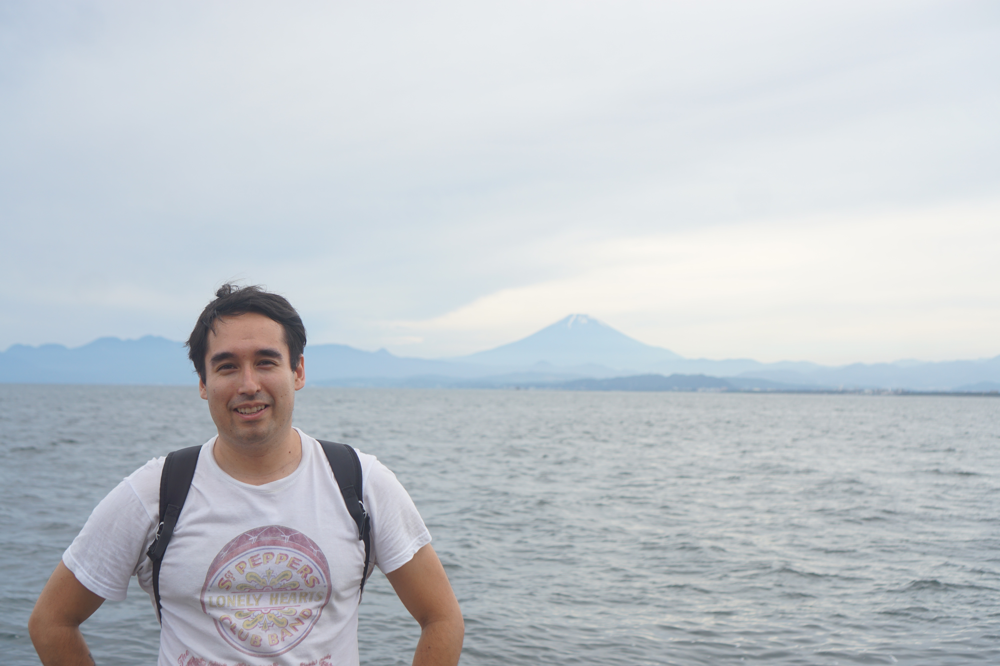

About
Understanding the universe, one structure at a time.
I am a Rubin/LSST Fellow in the Astronomy Department at Universidad Técnica Federico Santa María.
My research uses the large-scale structure of the universe to study cosmology and extensions to ΛCDM. I completed my PhD at Durham University, as part of the Institute for Computational Cosmology, the Centre for Extragalactic Astronomy and the Institute for Data Science.
The Centres for Doctoral Training programme also gave me a strong foundation in machine learning, with applications inside and outside academia.
“It’s a dangerous business, Frodo, going out your door.”— J.R.R. Tolkien, The Lord of the Rings
